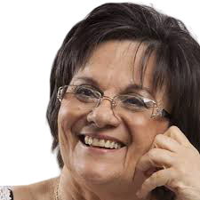
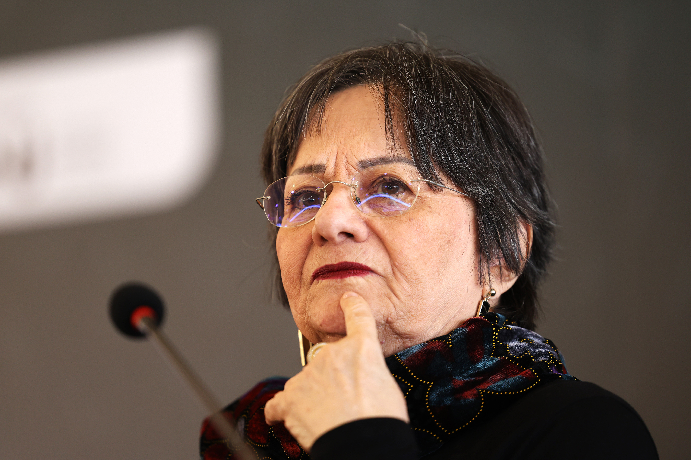
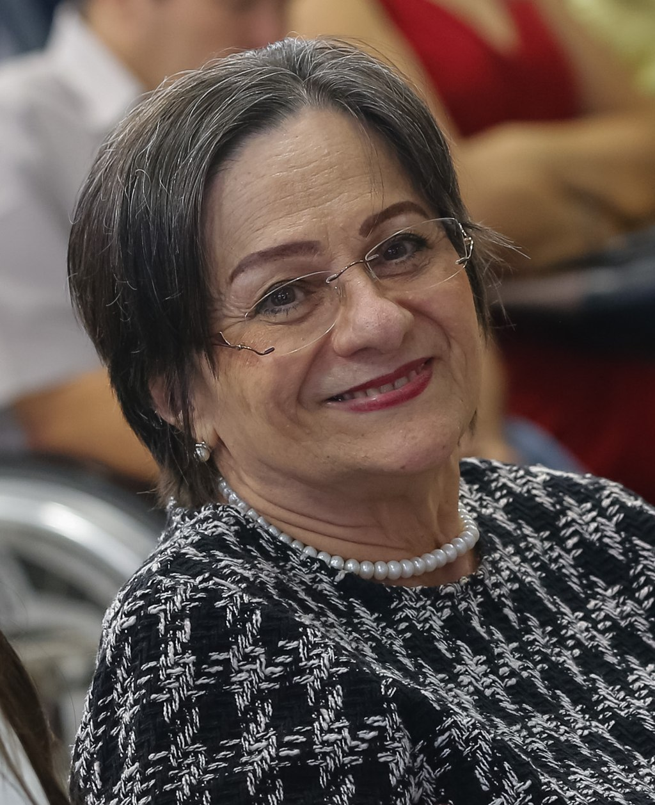
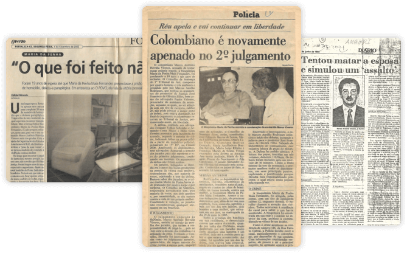

Percebemos que você já iniciou esta leitura. Deseja continuar de onde parou?

Maria da Penha Maia Fernandes nasceu em Fortaleza, Ceará, no dia 1º de fevereiro de 1945. É farmacêutica bioquímica, formada pela Faculdade de Farmácia e Bioquímica da Universidade Federal do Ceará, onde se graduou em 1966. Posteriormente, obteve seu mestrado em Parasitologia em Análises Clínicas pela Faculdade de Ciências Farmacêuticas da Universidade de São Paulo, em 1977.
O caso de Maria da Penha simboliza a realidade da violência doméstica vivida por milhares de mulheres no Brasil.
Autora da obra Sobrevivi… posso contar (1994) e fundadora do Instituto Maria da Penha, criado em 2009, ela segue atuante na conscientização da sociedade e no combate à impunidade dessa violência de raízes sociais, culturais e políticas.
Maria da Penha conheceu Marco Antonio Heredia Viveros, colombiano, quando estava cursando o mestrado na Faculdade de Ciências Farmacêuticas da Universidade de São Paulo em 1974. À época, ele fazia os seus estudos de pós-graduação em Economia na mesma instituição.
Naquele ano, eles começaram a namorar, e Marco Antonio demonstrava ser muito amável, educado e solidário com todos à sua volta. O casamento aconteceu em 1976. Após o nascimento da primeira filha e da finalização do mestrado de Maria da Penha, eles se mudaram para Fortaleza, onde nasceram as outras duas filhas do casal. Foi a partir desse momento que essa história mudou.


As agressões começaram a acontecer quando ele conseguiu a cidadania brasileira e se estabilizou profissional e economicamente. Agia sempre com intolerância, exaltava-se com facilidade e tinha comportamentos explosivos não só com a esposa mas também com as próprias filhas.
O medo constante, a tensão diária e as atitudes violentas tornaram-se cada vez mais frequentes.
Foi nessa última fase, também conhecida como “lua de mel”, que, na esperança de uma mudança real por parte do ex-marido, Maria da Penha teve a sua terceira filha.
NO ANO DE 1983, Maria da Penha foi vítima de dupla tentativa de feminicídio por parte de Marco Antonio Heredia Viveros.
Primeiro, ele deu um tiro em suas costas enquanto ela dormia. Como resultado dessa agressão, Maria da Penha ficou paraplégica devido a lesões irreversíveis na terceira e quarta vértebras torácicas, laceração na dura-máter e destruição de um terço da medula à esquerda – constam-se ainda outras complicações físicas e traumas psicológicos.
No entanto, Marco Antonio declarou à polícia que tudo não havia passado de uma tentativa de assalto, versão que foi posteriormente desmentida pela perícia. Quatro meses depois, quando Maria da Penha voltou para casa – após duas cirurgias, internações e tratamentos –, ele a manteve em cárcere privado durante 15 dias e tentou eletrocutá-la durante o banho.
Ao recompor as partes de um verdadeiro quebra-cabeça cruel arquitetado pelo agressor, Maria da Penha passou a entender as estratégias adotadas pelo ex-marido: ele pressionou para que a apuração do suposto assalto não prosseguisse, convenceu-a a assinar uma procuração que lhe concedia plenos poderes para representá-la, criou um relato dramático sobre o desaparecimento do carro do casal, mantinha diversas cópias autenticadas de seus documentos e, além disso, veio à tona a existência de uma amante.
Conscientes da gravidade do caso, familiares e amigos de Maria da Penha mobilizaram-se para oferecer apoio jurídico e organizar sua saída do lar, de modo que não fosse caracterizada como abandono de domicílio; dessa forma, ela não correria o risco de perder a guarda das filhas.
A violência seguinte vivenciada por Maria da Penha, após o atentado sofrido, partiu do próprio Poder Judiciário:
O primeiro julgamento de Marco Antonio ocorreu apenas em 1991, isto é, oito anos depois do crime. Embora tenha sido condenado a 15 anos de prisão, o agressor deixou o fórum em liberdade em razão dos recursos apresentados por sua defesa.
Mesmo em condição de grande fragilidade, Maria da Penha seguiu firme na busca por justiça. Foi nesse contexto que escreveu o livro Sobrevivi... posso contar, publicado em 1994 e reeditado em 2010, no qual narra sua trajetória e descreve os desdobramentos do processo judicial movido contra Marco Antonio.
O segundo julgamento ocorreu apenas em 1996, ocasião em que o ex-marido foi condenado a 10 anos e 6 meses de prisão. No entanto, sob a justificativa de supostas irregularidades no processo levantadas pela defesa, a pena novamente não foi executada.

O ano de 1998 marcou um ponto decisivo, quando o caso passou a ter repercussão internacional. Maria da Penha, juntamente com o Centro para a Justiça e o Direito Internacional (CEJIL) e o Comitê Latino-Americano e do Caribe para a Defesa dos Direitos da Mulher (CLADEM), levou a denúncia à Comissão Interamericana de Direitos Humanos da Organização dos Estados Americanos (CIDH/OEA).
Mesmo diante de um litígio internacional que envolvia sérias violações de direitos humanos e o descumprimento de obrigações previstas em tratados assinados pelo próprio Estado — como a Convenção Americana sobre Direitos Humanos (Pacto de San José da Costa Rica), a Declaração Americana dos Direitos e Deveres do Homem, a Convenção Interamericana para Prevenir, Punir e Erradicar a Violência contra a Mulher (Convenção de Belém do Pará) e a Convenção sobre a Eliminação de Todas as Formas de Discriminação contra a Mulher — o Estado brasileiro manteve-se omisso e não se manifestou em nenhum momento ao longo do processo.
Em 2001, após ter recebido quatro ofícios da CIDH/OEA entre 1998 e 2001 — permanecendo em silêncio diante das denúncias —, o Estado brasileiro foi responsabilizado por negligência, omissão e convivência diante da violência doméstica sofrida pelas mulheres no país.
A história de Maria da Penha representava mais do que um caso isolado: era um reflexo do que ocorria de forma sistemática no Brasil, onde os agressores frequentemente não eram responsabilizados.
Concluir, de forma célere e eficaz, o processo penal contra o responsável pela agressão e pela tentativa de homicídio cometidas contra a senhora Maria da Penha Maia Fernandes
Realizar uma investigação séria, imparcial e minuciosa para apurar a responsabilidade pelas irregularidades e pelos atrasos injustificados que comprometeram o andamento célere e eficaz do processo, adotando, em seguida, as medidas administrativas, legislativas e judiciais cabíveis.
Adotar, sem prejuízo das medidas que possam ser propostas contra o responsável civil pela agressão, as providências necessárias para que o Estado garanta à vítima reparação simbólica e material adequada pelas violações reconhecidas, especialmente em razão da ausência de um recurso rápido e eficaz; da manutenção do caso na impunidade por mais de quinze anos; e do atraso que comprometeu a possibilidade oportuna de propositura de ação de reparação e indenização civil.
Linha do tempo com marcos da proteção legal e da rede de atendimento à mulher no Brasil.
A Lei nº 11.340/2006 foi sancionada para enfrentar a violência doméstica e familiar contra a mulher.
prevê medidas para interromper o ciclo de violência e presevar a integridade da vítima.
Fortalece juizados, delegacias e fluxos especializados para acolhimento e responsabilização.
Incentiva ações educativas para prevenir a violência e combater padrões discriminatórios.
A proteção da mulher envolve articulação entre saúde, assistência social, justiça e segurança.
Conhecer direitos e canais institucionais é essencial para romper o ciclo da violência.
A Lei Maria da Penha combina proteção imediata, responsabilização do agressor, atendimento especializado e ações de prevenção para fortalecer a segurança e a dignidade das mulheres.
CALAZANS, Myllena; CORTES, Iáris. O processo de criação, aprovação e implementação da Lei Maria da Penha. In: CAMPOS, C. H. (Org.). Lei Maria da Penha comentada em uma perspectiva jurídico-feminista. Rio de Janeiro: Lumen Juris, 2011.
COMISSÃO INTERAMERICANA DE DIREITOS HUMANOS/ORGANIZAÇÃO DOS ESTADOS AMERICANOS. Relatório n. 54/01, Caso 12.051, Maria da Penha Maia Fernandes, 4 abr. 2001, Brasil. Disponível em: http://www.sbdp.org.br/arquivos/material/299_Relat%20n.pdf. Acesso em: 27 set. 2018.
PENHA, Maria da. Sobrevivi... posso contar. 2. ed. Fortaleza: Armazém da Cultura, 2012.

A Central de Atendimento à Mulher é um serviço desenvolvido para enfrentar a violência contra as mulheres, oferecendo três modalidades de atendimento: recebimento de denúncias, orientação às vítimas de violência e informações sobre leis e campanhas.
Ligue 180. Não se cale, denuncie.